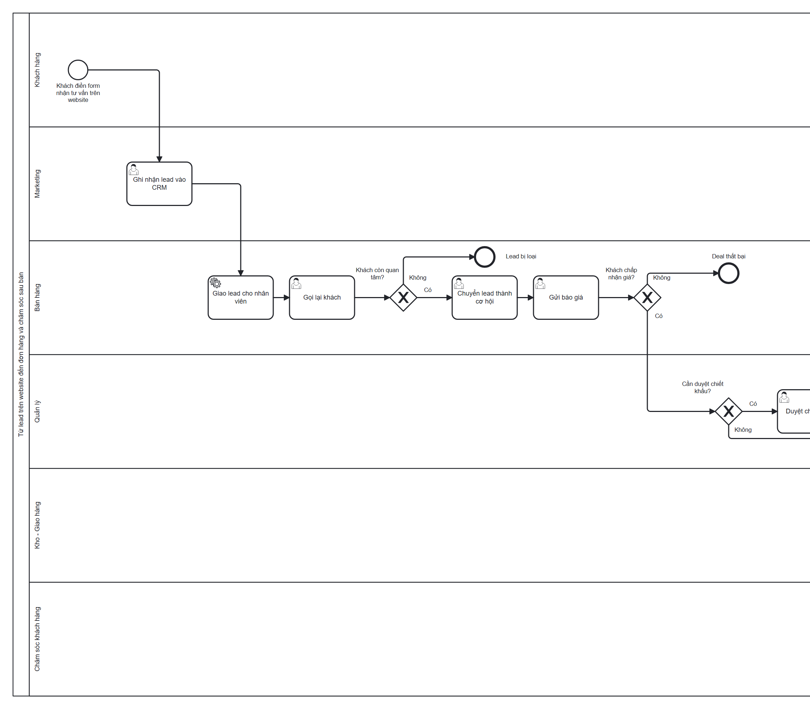
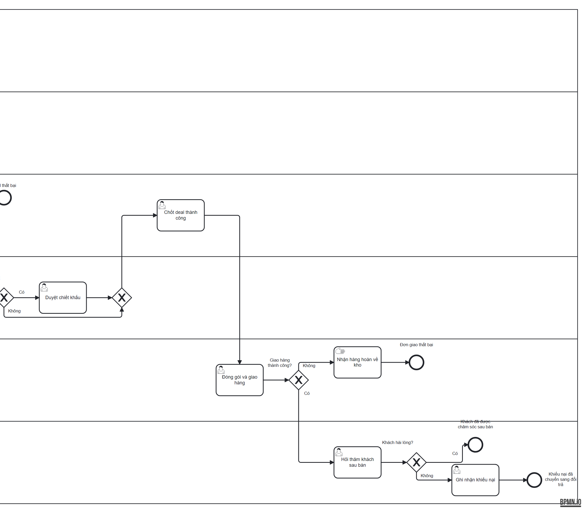
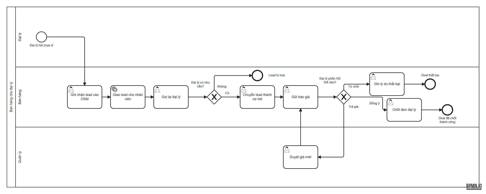

Bán hàng: quy trình chung và bán cho đại lý
Tự động hóa lực lượng bán hàng (SFA) và tỉ lệ chuyển đổi theo giáo trình, rồi áp vào hai quy trình của Biti's: từ lead trên website đến đơn hàng, và bán cho đại lý có vòng báo giá lặp lại.
- Phân biệt được lead, lead đã đạt chuẩn (qualified), cơ hội (opportunity), pipeline và báo giá trong SFA
- Tính và diễn giải được tỉ lệ chuyển đổi của một phễu bán hàng, và không nhầm nó với Conversion Model của Hofmeyr
- Tính lại được hai báo giá của đồ án (18.796.800 ₫ và 43.608.000 ₫ → 41.712.000 ₫) và đọc được vòng lặp, cổng ba nhánh trên sơ đồ
- Giải thích được Convert to Deal, Assignment Rule và duyệt chiết khấu thật sự làm gì trong Frappe CRM, cái nào của Frappe, cái nào của nhóm
1Kiến thức tổng quát: SFA (Sales Force Automation – tự động hóa lực lượng bán hàng) và tỉ lệ chuyển đổi
SFA là gì
Giáo trình định nghĩa: SFA là việc dùng công nghệ để quản lý các hoạt động bán hàng của công ty. Slide của thầy chia công cụ SFA thành hai nhóm: công cụ cho nhân viên bán hàng (quản lý khách hàng, hoạt động, lead, cơ hội, báo giá, đơn hàng...) và công cụ cho quản lý bán hàng (phân tích, dự báo, quản lý lãnh thổ, quy trình...).
Từ lead đến cơ hội đến đơn hàng: các khái niệm cần phân biệt
| Khái niệm | Giáo trình nói (diễn đạt lại) |
|---|---|
| Lead (sales lead – dấu hiệu có nhu cầu) | Dấu hiệu cho thấy một người hoặc một công ty có thể cần sản phẩm. Dấu hiệu đến từ phân tích dữ liệu, từ phản hồi của khách với một thông điệp marketing (ví dụ điền form hỏi mua), hoặc từ việc công ty chủ động tiếp cận. Có lead chưa có nghĩa là khách sẽ mua (Chương 3, tr. 65–66). |
| Lead đạt chuẩn (qualified lead) | Lead mà công ty đã xác nhận khách vừa có khả năng, vừa sẵn lòng mua, và ưu đãi phù hợp nhu cầu. Xác nhận bằng lời khách hoặc bằng bằng chứng khác (Chương 3, tr. 66). |
| Quản lý lead (lead management) | Gồm tạo lead, đánh giá đạt chuẩn, phân bổ, nuôi dưỡng, theo dõi (Chương 3, tr. 80). Phần mềm cho phép lấy lead từ nhiều điểm chạm, chấm điểm lead, và tự giao lead cho nhân viên theo luật như vai trò, lãnh thổ, chuyên môn sản phẩm (Chương 8, tr. 188–189). |
| Cơ hội (opportunity) | Một bản ghi về một giao dịch có thể xảy ra. Nhân viên đi theo các bước của phương pháp bán hàng (đánh giá lead, tiếp cận đầu, hiểu yêu cầu, đưa giải pháp, soạn đề xuất, chốt) như một bảng kiểm. Lead được "định nghĩa lại" (convert) thành cơ hội khi đủ điều kiện (Chương 8, tr. 189; Chương 3, tr. 81). |
| Pipeline (đường ống bán hàng) | Quá trình quản lý cả chu trình bán, từ tìm khách đến chốt. Thường có 5 đến 7 giai đoạn, và xác suất chốt tăng dần theo giai đoạn (Chương 8, tr. 191). |
| Đề xuất, báo giá (proposal, quotation) | Phần mềm tạo đề xuất có thương hiệu từ dữ liệu có sẵn; mẫu giúp soạn nhanh và duyệt nhanh. Quản lý báo giá và quản lý đơn hàng nằm trong danh sách chức năng cho nhân viên bán hàng (Chương 8, slide 8; tr. 193). |
Lợi ích của SFA
Cho nhân viên: lead chất lượng hơn, chu kỳ bán ngắn hơn, nhiều cơ hội chốt hơn, tỉ lệ thắng cao hơn. Cho quản lý: năng suất nhân viên cao hơn, quan hệ khách tốt hơn, báo cáo chính xác hơn, ít cơ hội bị mất, chi phí bán thấp hơn (Chương 8, slide 10–11; tr. 196). Giáo trình nhắc đây là lợi ích mà nhà cung cấp và tư vấn nêu; người dùng chỉ chấp nhận khi thấy hệ thống hữu ích và dễ dùng (slide 12–13).
Hành trình khách hàng và tỉ lệ chuyển đổi
Giáo trình xếp "thu hút khách mới" (customer acquisition) là nhiệm vụ đầu tiên trong hành trình khách hàng. Để biết việc thu hút có hiệu quả không, công ty cần chỉ số KPI (key performance indicator – chỉ số đo hiệu quả). Giáo trình nêu ba loại: (1) số khách mới thu được, ví dụ số lead mới và tỉ lệ chuyển đổi từ khách tiềm năng sang mua hàng; (2) chi phí thu hút mỗi khách mới; (3) giá trị của khách mới trong suốt quan hệ (Chương 3, slide 17; tr. 81).
Đừng nhầm với "Conversion Model" của Hofmeyr
Cùng chữ "conversion" nhưng hai thứ khác hẳn. Conversion Model (mô hình chuyển đổi) của Hofmeyr là cách đánh giá khách có dễ đổi nhà cung cấp không, dựa vào mức gắn bó. Mô hình chia khách của mình thành bốn nhóm theo mức gắn bó (entrenched, average, shallow, convertible) và chia người chưa là khách thành bốn nhóm theo mức sẵn sàng (đại ý: available, ambivalent, weakly unavailable, strongly unavailable). Mức gắn bó đo qua bốn câu hỏi về mức hài lòng, mức quan tâm tới quan hệ, có phương án khác hấp dẫn không, và khác nhau bao nhiêu (Chương 3, slide 7–8; tr. 64). Tỉ lệ chuyển đổi chỉ là một phép chia đếm số người.
- Conversion Model: phân loại khách theo mức gắn bó, để chọn ai đáng nhắm tới.
- Tỉ lệ chuyển đổi: một con số đo phễu, để biết bao nhiêu người đi tiếp.
2Ứng dụng trong đồ án: quy trình chung và quy trình bán cho đại lý
Quy trình chung (cả nhóm làm)
Quy trình đưa một khách từ lúc điền form trên website đến khi mua, nhận hàng và được hỏi thăm sau bán. Có 6 làn (Khách hàng, Marketing, Bán hàng, Quản lý, Kho - Giao hàng, Chăm sóc khách hàng), 23 nút, 5 sự kiện kết thúc: Lead bị loại, Deal thất bại, Đơn giao thất bại, Khách đã được chăm sóc sau bán, Khiếu nại đã chuyển sang đổi trả. Sáu làn là mô hình giả định của nhóm, không phải cơ cấu thật của Biti's.


Ánh xạ: khái niệm SFA ↔ nút của sơ đồ chung
| Khái niệm SFA | Nút / dữ liệu trong đồ án |
|---|---|
| Lead (dấu hiệu có nhu cầu) | "Khách điền form nhận tư vấn trên website" rồi "Ghi nhận lead vào CRM": lead CRM-LEAD-2026-00073, nguồn "Website Biti's", địa bàn Miền Nam |
| Phân bổ lead theo luật | "Giao lead cho nhân viên": Assignment Rule tự điền chủ sở hữu lead (nút duy nhất của quy trình do hệ thống tự làm) |
| Lead đạt chuẩn | "Gọi lại khách" rồi cổng "Khách còn quan tâm?" Có: trạng thái New → Contacted → Qualified |
| Cơ hội (opportunity) | "Chuyển lead thành cơ hội": nút Convert to Deal tạo CRM-DEAL-2026-00031 |
| Báo giá | "Gửi báo giá": 12 đôi BT-001 và 12 đôi BT-002, giảm 12%; in PDF "Báo giá Bitis" |
| Phê duyệt (quản lý) | Cổng "Cần duyệt chiết khấu?" rồi "Duyệt chiết khấu" ở làn Quản lý; ngưỡng 10% là [GIẢ ĐỊNH] |
| Chốt đơn / đơn hàng | "Chốt deal thành công": deal sang Won, in "Hóa đơn Bitis" |
| Dịch vụ sau bán | Kho giao hàng; "Hỏi thăm khách sau bán"; cổng "Khách hài lòng?" (nối sang bài về khiếu nại và đổi trả) |
Tính lại báo giá của quy trình chung
Giá niêm yết trong dữ liệu mẫu: BT-001 và BT-002 mỗi đôi 890.000 ₫ (scripts/gd1-06-du-lieu-demo.py).
Vì 12% lớn hơn ngưỡng tự duyệt 10% do nhóm đặt [GIẢ ĐỊNH], deal phải qua nút "Duyệt chiết khấu". Với đơn này, giảm đúng 10% sẽ là 21.360.000 × 0,9 = 19.224.000 ₫ và không cần duyệt.
Trong 5 kết quả cuối, chạy thử có bản ghi cho: Lead bị loại (lead 00074, lý do "Chưa có nhu cầu"), Deal thất bại (deal 00032, lý do "Giá cao"), Khách đã được chăm sóc sau bán và Khiếu nại đã chuyển sang đổi trả (đều trên deal 00031). "Đơn giao thất bại" thì chưa có dữ liệu thử riêng ở quy trình này: SOP trỏ sang bước T8 của quy trình đơn hàng online.
Quy trình bán cho đại lý (Diệu Anh)
Quy trình B2B (Business to Business – bán cho doanh nghiệp) có 3 làn (Đại lý, Bán hàng, Quản lý), 14 nút. Điểm riêng: đại lý trả giá và quy trình quay lại bước báo giá.

| Vòng | Việc | Số liệu (30 đôi BT-004 + 30 đôi BT-005, mỗi đôi 790.000 ₫) |
|---|---|---|
| Báo giá lần 1 | Giảm 8%, deal ở Proposal/Quotation | Trước giảm: 60 × 790.000 = 47.400.000 ₫. Sau giảm 8%: 47.400.000 × 0,92 = 43.608.000 ₫ |
| Đại lý trả giá | Đề nghị giảm 12% nếu nhập 60 đôi; deal sang Negotiation | — |
| Quản lý duyệt | CRM Task "Duyệt giá mới 12%", Done | — |
| Báo giá lần 2 | Sửa chiết khấu 12%, deal về Proposal/Quotation, in PDF lần 2 | 47.400.000 × 0,88 = 41.712.000 ₫ (thấp hơn lần 1: 43.608.000 − 41.712.000 = 1.896.000 ₫) |
| Đồng ý | Deal Won | Giá trị deal 41.712.000 ₫ |
3Hiểu sâu đồ án: Convert to Deal, Assignment Rule, duyệt chiết khấu
Vòng lặp: vẽ mũi tên quay lại, không chép bước
- Làm gì: trên sơ đồ đại lý có đúng một nút "Gửi báo giá"; từ "Duyệt giá mới" có mũi tên quay về nút đó (scripts/gd2/quy-trinh.js, luồng
['duyet','bg']). - Vì sao: số vòng trả giá không biết trước. Nếu chép thành "báo giá lần 1, lần 2, lần 3..." thì sơ đồ phải quyết định cố định số vòng, vừa dài vừa sai thực tế. Mũi tên quay lại cho phép lặp bao nhiêu lần cũng được và vẫn đúng một nghĩa.
- Phương án khác: chép bước hai lần, bỏ vì không thể hiện được "lặp tới khi hai bên chốt".
- Cổng ba nhánh: "Đại lý phản hồi thế nào?" là cổng XOR (exclusive – chỉ một nhánh được đi mỗi lần): Từ chối, Đồng ý, Trả giá. Câu hỏi của cổng đặt thành câu hỏi, các nhánh đặt tên theo câu trả lời.
Convert to Deal thật sự làm gì
Theo mã nguồn Frappe CRM bản đang cài (16.0.1, tệp crm_lead.py), hàm convert_to_deal tạo Contact, tạo Organization (khi có), tạo CRM Deal mới, rồi gọi mark_converted: đặt cờ converted = 1 và đặt trạng thái lead thành Qualified (không có trạng thái "Converted"). Lead không bị xóa; hệ thống từ chối chuyển lead có trạng thái loại Lost. Nhật ký chạy thử ghi nhận: deal 00031 được tạo từ lead 00073, lead có converted = 1 và trạng thái Qualified.
Duyệt chiết khấu: ghi bằng CRM Task
- Hiện trạng: Frappe CRM 16.0.1 không có luồng duyệt chiết khấu (docs/phase-report.md mục 2.3, phát hiện a). Nhóm ghi bằng một CRM Task giao tài khoản Quản lý (trạng thái Done) cộng một ghi chú "đã duyệt" trên deal. Với deal 00031 đó là CRM Task số 41; với deal 00033 (đại lý) là CRM Task số 44.
- Hạn chế: việc duyệt chỉ là bản ghi để chứng minh, không bắt buộc. Hệ thống không ngăn người bán chuyển deal sang Won khi chưa có nhiệm vụ duyệt. Thứ tự đúng do quy trình và con người giữ.
- Ngưỡng 10% do nhóm tự đặt
[GIẢ ĐỊNH], chưa có nguồn từ Biti's. Ở quy trình đại lý, SOP chỉ ghi "đề nghị giảm 12% với đơn từ 60 đôi", không nêu ngưỡng cụ thể. - Việc để lại: luồng duyệt có cấu trúc được "xem xét ở GĐ3"; chưa quyết định phương án.
Assignment Rule điền chủ sở hữu lead
Theo tài liệu Frappe CRM, Assignment Rule (luật phân công) gán lead hoặc deal cho nhân viên theo điều kiện, và có hai cách chia: xoay vòng (auto-rotate) hoặc theo khối lượng việc. Nhóm tạo luật "Lead miền Nam - Nhóm Bán hàng miền Nam" và luật miền Bắc (nhóm miền Bắc chỉ có một người, nên lead đại lý luôn vào một người). Khi chạy thử, kết quả nằm ở trường lead_owner; trường _assign thì rỗng (docs/phase-report.md, phát hiện d). Miền Trung và Xuất khẩu chưa có luật nên trưởng nhóm giao tay.
| Của Frappe | Của nhóm |
|---|---|
| Lead, Deal, Contact, trạng thái; nút Convert to Deal | Sơ đồ BPMN, tên các nút và cổng, vòng lặp báo giá |
| Cơ chế Assignment Rule (xoay vòng, theo khối lượng) | Tên luật, điều kiện địa bàn, danh sách người trong nhóm |
| CRM Task, ghi chú, in PDF qua Print Format | Việc dùng CRM Task để ghi duyệt chiết khấu; mẫu "Báo giá Bitis", "Hóa đơn Bitis" |
| Không có: luồng duyệt, kiểm tra ngưỡng chiết khấu | Ngưỡng 10% [GIẢ ĐỊNH]; số liệu giá và chiết khấu của chạy thử |
Cách tự kiểm tra
- Mở deal CRM-DEAL-2026-00031: tab Sản phẩm có 2 dòng, giảm 12%; tổng sau giảm 18.796.800 ₫; trạng thái Won; tab Nhiệm vụ có việc duyệt chiết khấu.
- Mở deal CRM-DEAL-2026-00033: trạng thái Won, giá trị 41.712.000 ₫; ghi chú "Đại lý trả giá"; nhiệm vụ "Duyệt giá mới 12%".
- Đối chiếu với evidence/A4-3/chay-thu.json (C1–C14, B1–B12), hai PDF daily_bao-gia-lan1.pdf và daily_bao-gia-lan2.pdf, và chung_bao-gia.pdf.
- Tính lại bằng máy: 12×890000×2×0,88 = 18.796.800; 60×790000×0,92 = 43.608.000; 60×790000×0,88 = 41.712.000.
Thầy sẽ hỏi
1. Convert to Deal là gì? Lead có mất đi không?
Trả lời gợi ý: hàm tạo Contact, Organization, Deal mới và đặt converted = 1. Lead không mất, vẫn còn với converted = 1 và trạng thái Qualified (hàm đặt trạng thái này). Chỉ tới evidence/A4-3/chay-thu.json bước C5.
2. Vì sao vòng báo giá vẽ bằng mũi tên quay lại?
Vì số vòng trả giá không biết trước; chép bước sẽ cố định số vòng. Chạy thử đi một vòng (43.608.000 ₫ rồi 41.712.000 ₫).
3. Hệ thống có bắt buộc duyệt chiết khấu không?
Không. CRM không có luồng duyệt; nhóm ghi bằng CRM Task và ghi chú. Ngưỡng 10% là giả định của nhóm. Luồng duyệt có cấu trúc xem xét ở GĐ3.
4. Lead được giao cho nhân viên bằng cách nào? Ở trường nào?
Assignment Rule theo địa bàn; kết quả ở trường lead_owner, không phải _assign. Miền Trung, Xuất khẩu chưa có luật.
5. Có dùng số liệu chạy thử để nói tỉ lệ chuyển đổi của Biti's được không?
Không: dữ liệu do nhóm tạo, mỗi lead một kịch bản, không phản ánh khách thật. Muốn có tỉ lệ chuyển đổi thật phải có dữ liệu bán hàng thật của Biti's, mà nhóm không có.
6. Giá 18.796.800 ₫ từ đâu ra?
24 đôi × 890.000 = 21.360.000 ₫, giảm 12% (2.563.200 ₫) còn 18.796.800 ₫. Chỉ tới tab Sản phẩm của deal 00031 và file chung_bao-gia.pdf.
Tài liệu tham khảo của bài
- Prior, Buttle & Maklan (2024), Customer Relationship Management, 5th ed.: Chương 8 (slide 3–13; giáo trình tr. 188–196) và Chương 3 (slide 7–8, 17; giáo trình tr. 64, 80–83)
- Tài liệu Frappe CRM, Assignment Rule: tai-lieu-chinh-thong/frappe/02-assignment-rule.txt (bản latest, tải 2026-11-16)
- Mã nguồn Frappe CRM, crm_lead.py: tai-lieu-chinh-thong/tich-hop/83-src-crm-lead-py.txt (tải 2026-11-16; người điều phối đã đối chiếu với bản 16.0.1 đang cài)
- Dự án đồ án (nguồn sự thật của phần 2 và 3): docs/quy-trinh-sop.md; evidence/A4-3/chay-thu.json (C1–C14, B1–B12); scripts/gd2-01-chay-thu.py; scripts/gd2/quy-trinh.js; scripts/gd1-06-du-lieu-demo.py (giá sản phẩm); docs/phase-report.md mục Giai đoạn 2
Bài giảng diễn đạt lại bằng lời của nhóm, không sao chép giáo trình. Chương và trang ghi để bạn tra lại bản gốc.